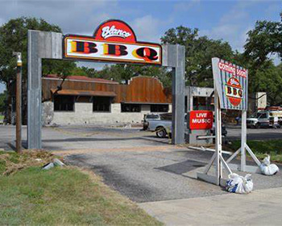

Welcome to Alamo Eatz
}
Why Alamo Eatz?
Authentic Reviews: Dive into honest and detailed reviews from fellow food enthusiasts. Our community of reviewers shares their genuine experiences, helping you make informed dining choices.Diverse Cuisine: From Tex-Mex delights to gourmet international dishes, explore a wide array of cuisines that San Antonio has to offer. Our curated lists and recommendations ensure you never miss out on the best spots.
Community Engagement: Join a passionate community of food lovers. Share your reviews, rate your favorite dishes, and connect with others who share your culinary interests. At Alamo Eatz, we believe that every meal tells a story. Let us guide you through the rich tapestry of flavors that make San Antonio a food lover’s paradise. Bon appétit!
Alamo Eatz is a vibrant online platform dedicated to connecting food lovers with the finest culinary experiences in San Antonio, Texas. With a focus on local cuisine, Alamo Eatz helps users discover hidden gems, top-rated restaurants, and mouth-watering dishes that reflect the rich cultural heritage of the region. Whether you're a foodie looking to explore new flavors or a restaurant owner eager to showcase your menu,Alamo Eatz brings the community together through a shared passion for good food.
This Week's Hot Top Two!

Step into Mamacita's where the vibrant spirit of Mexico comes alive through their delicious cuisine and warm hospitality. Nestled in the heart of the city, Mamacitas is your go-to destination for an authentic Mexican dining experience.
Their menu is a culinary journey through Mexico, featuring traditional dishes made with the freshest ingredients.
Whether you’re going for a casual lunch, a festive dinner, or a special occasion, Mamacitas promises a dining experience that will leave you craving more. Come and discover why Mamacitas is the perfect place to savor the tastes of Mexico!
Address: 8030 Interstate 10 West, San Antonio,Tx 78230
Phone: (210)341-5424
Opening Hours:
- Sunday - Thursday: 11:00 AM - 9:30 PM
- Friday-Saturday: 11:00 AM - 10:00 PM

Welcome to Blanco BBQ, your ultimate destination for mouth-watering barbecue in a warm, inviting atmosphere. At Blanco BBQ, they pride themselves on serving up the finest cuts of meat, slow-cooked to perfection over a blend of aromatic woods. The menu features a tantalizing array of smoked brisket, tender ribs, juicy pulled pork, and savory sausages, all seasoned with our signature rubs and sauces.
Everything from their friendly staff, rustic decor, and live music events make every visit a memorable experience. Come join them for a meal that feels like home, and discover why Blanco BBQ is the heart of barbecue in our town.
Address: 13259 Blanco Rd. San Antonio, Tx
Phone: (210)251-2602
Opening Hours:
- Sunday - Thursday: 11:00 AM - 9:00 PM
- Friday-Saturday: 10:00 AM - 10:00 PM
Breakfast Hours:
- Monday-Friday: 6:30 AM-10:30AM